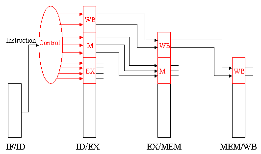
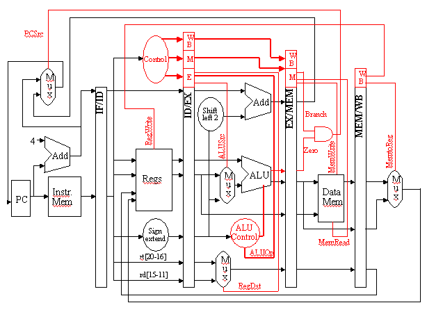
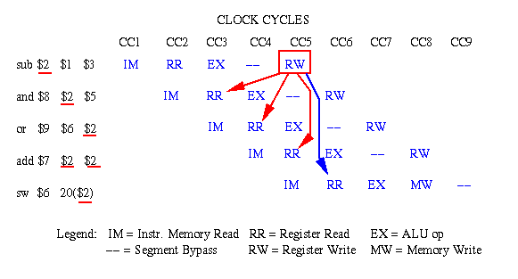
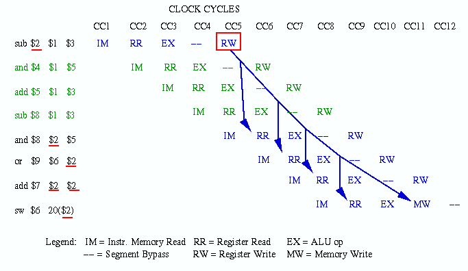
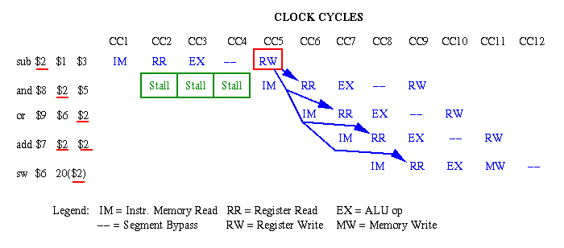

Reading Assignments and Exercises
The control of pipeline processors has similar issues to the control of multicycle datapaths. Pipelining leaves the meaning of the nine control lines unchanged, that is, those lines which controlled the multicycle datapath. In pipelining, we set control lines (to defined values) in each stage for each instruction. This is done in hardware by extending pipeline registers to include control information and circuitry.
Observe that there is nothing to control during instruction fetch and decode (IF and ID). Thus, we can begin our control activities (initialization of control signals) during ID, since control will only be exerted during EX, MEM, and WB stages of the pipeline. Recalling that the various stages of control and buffer circuitry between the pipeline stages are labelled IF/ID, ID/EX, EX/MEM, and MEM/WB, we have the propagation of control shown in Figure 5.5.

Figure 5.5. Propagation of control through the EX, MEM, and
WB states of the MIPS pipelined datapath [Maf01,MK98].
Here, the following stages perform work as specified:
IF/ID: Initializes control by passing the rs, rd, and rt fields of the instruction, together with the opcode and funct fields, to the control circuitry.
ID/EX: Buffers control for the EX, MEM, and WB stages, while executing control for the EX stage. Control decides what operands will be input to the ALU, what ALU operation will be performed, and whether or not a branch is to be taken based on the ALU Zero output.
EX/MEM: Buffers control for the MEM and WB stages, while executing control for the MEM stage. The control lines are set for memory read or write, as well as for data selection for memory write. This stage of control also contains the branch control logic.
MEM/WB: Buffers and executes control for the WB stage, and selects the value to be written into the register file.
Figure 5.6 shows how the control lines (red) are arranged on a per-stage basis, and how the stage-specific control signals are buffered and passed along to the next applicable stage.

Figure 5.6. Propagation of control through the EX, MEM, and
WB states of the MIPS pipelined datapath [Maf01,MK98].
Reading Assigment: Study the propagation of control signals for the example program given on p. 471 of the textbook, which is illustrated stepwise on pp. 472-476 of the textbook.
Pipeline processors have several problems associated with controlling smooth, efficient execution of instructions on the pipeline. These problems are generally called hazards, and include the following three types:
Structural Hazards occur when different instructions collide while trying to access the same piece of hardware in the same segment of a pipeline. This type of hazard can be alleviated by having redundant hardware for the segments wherein the collision occurs. Occasionally, it is possible to insert stalls or reorder instructions to omit this type of hazard.
Data Hazards occur when an instruction depends on the result of a previous instruction still in the pipeline, which result has not yet been computed. The simplest remedy inserts stalls in the execution sequence, which reduces the pipeline's efficiency. The solution to data dependencies is twofold. First, one can forward the ALU result to the writeback or data fetch stages. Second, in selected instances, it is possible to restructure the code to eliminate some data dependencies. Forwarding paths are shown as thin blue or red lines in Figure 5.4.
Control Hazards can result from branch instructions. Here, the branch target address might not be ready in time for the branch to be taken, which results in stalls (dead segments) in the pipeline that have to be inserted as local wait events, until processing can resume after the branch target is executed. Control hazards can be mitigated through accurate branch prediction (which is difficult), and by delayed branch strategies.
We next examine hazards in detail, and discuss several techniques for eliminating or relieving hazards.
Definition. A data hazard occurs when the current instruction requires the result of a preceding instruction, but there are insufficient segments in the pipeline to compute the result and write it back to the register file in time for the current instruction to read that result from the register file.
We typically remedy this problem in one of three ways:
Forwarding: In order to resolve a dependency, one adds special circuitry to the pipeline that is comprised of wires and switches with which one forwards or transmits the desired value to the pipeline segment that needs that value for computation. Although this adds hardware and control circuitry, the method works because it takes far less time for the required value(s) to travel through a wire than it does for a pipeline segment to compute its result.
Code Re-Ordering: Here, the compiler reorders statements in the source code, or the assembler reorders object code, to place one or more statements between the current instruction and the instruction in which the required operand was computed as a result. This requires an "intelligent" compiler or assembler, which must have detailed information about the structure and timing of the pipeline on which the data hazard would occur. We call this type of software a hardware-dependent compiler.
Stall Insertion: It is possible to insert one or more stalls (no-op instructions) into the pipeline, which delays the execution of the current instruction until the required operand is written to the register file. This decreases pipeline efficiency and throughput, which is contrary to the goals of pipeline processor design. Stalls are an expedient method of last resort that can be used when compiler action or forwarding fails or might not be supported in hardware or software design.
The following example is illustrative.
Example. Suppose we have the following sequence of instructions:
sub $2, $1, $3 # Register 2 is the output of sub and $8, $2, $5 # Operand #1 depends on Register 2 data or $9, $6, $2 # Operand #2 depends on Register 2 data add $7, $2, $2 # Add result depends on Register 2 data sw $6,20($2) # Store (memory write) depends on Register 2whose pipeline scheduling diagram is shown in Figure 5.7.

Figure 5.7. Example of data hazards in a sequence of MIPS instructions, where the red (blue) arrows indicate dependencies that are problematic (not problematic) [Pat98,MK98].Problem: The first instruction (
sub), starting on clock cycle 1 (CC1) completes on CC5, when the result in Register 2 is written to the register file. If we did nothing to resolve data dependencies, then no instruction that read Register 2 from the register file could read the "new" value computed by the sub instruction until CC5. The dependencies in the other instructions are illustrated by solid lines with arrowheads. If register read and write cannot occur within the same clock cycle (we will see how this could happen in Section 5.3.4), then only the fifth instruction (sw) can access the contents of register 2 in the manner indicated by the flow of sequential execution in the MIPS code fragment shown previously.Solution #1 - Forwarding: The result generated by the
subinstruction can be forwarded to the other stages of the pipeline using special control circuitry (data bus switchable to any other segment, which can be implemented via a decoder or crossbar switch). This is indicated notionally in Figure 5.7 by solid red lines with arrowheads. If the register file can read in the first half of a cycle and write in the second half of a cycle, then the forwarding in CC5 is not problematic. Otherwise, we would have to delay the execution of theaddinstruction by one clock cycle (see Figure 5.9 for insertion of a stall).Solution #2 - Code Re-Ordering: Since all Instructions 2 through 5 in the MIPS code fragment require Register 2 as an operand, we do not have instructions in that particular code fragment to put between Instruction 1 and Instruction 2. However, let us assume that we have other instructions that (a) do not depend on the results of Instructions 1-5, and (b) themselves induce no dependencies in Instructions 1-5 (e.g., by writing to register 1, 2, 3, 5, or 6). In that case, we could insert two instructions between Instructions 1 and 2, if register read and write could occur concurrently. Otherwise, we would have to insert three such instructions. The latter case is illustrated in the following figure, where the inserted instructions and their pipeline actions are colored dark green.

Figure 5.8. Example of code reordering to solve data hazards in a sequence of MIPS instructions [Pat98,MK98].Solution #3 - Stalls: Suppose that we had no instructions to insert between Instructions 1 and 2. For example, there might be data dependencies arising from the inserted instructions that would themselves have to be repaired. Alternatively, the program execution order (functional dependencies) might not permit the reordering of code. In such cases, we have to insert stalls, also called bubbles, which are no-op instructions that merely delay the pipeline execution until the dependencies are no longer problematic with respect to pipeline timing. This is illustrated in Figure 5.9 by inserting three stalls between Instructions 1 and 2.

Figure 5.9. Example of stall insertion to solve data hazards in a sequence of MIPS instructions [Pat98,MK98].As mentioned previously, the insertion of stalls is the least desireable technique because it delays the execution of an instruction without accomplishing any useful work (in contrast to code re-ordering).
Definition. A structural hazard occurs when there is insufficient hardware to support a computation in a given pipeline segment.
For example, consider the data dependency between the
first and fourth instructions (sub and add)
of the example in Section 5.3.3. Here, a register file write and a
register file read are scheduled in CC5. This can be resolved by (a)
duplicating hardware, or (b) modifying the existing hardware to
support concurrent operations. If we duplicated the register
file, then we could perform concurrent read and write operations, but
there would be a consistency problem. That is, at a given
clock cycle, registers in one register file could have different
values than the corresponding registers in the other register file.
This inconsistency is clearly unacceptable if accurate computation
is to be maintained.
Instead, we can modify the register file so that it (1) performs register write on the first half of the clock cycle and (2) performs register read on the second half of the clock cycle. In earlier hardware, designers sometimes inserted a delay between write and read that was very small in relation to the clock cycle time, in order to ensure convergence of the register file write.
Other structural hazards could occur during the branch instruction, if there were not two ALUs in the EX segment of the pipeline. That is, with only one ALU, we would have to simultaneously compute the BTA and determine (via subtraction) whether or not the branch condition was fulfilled. This would not be possible without two concurrent adders in the ALU, which is what we currently have in our MIPS pipeline design shown in Figure 5.4.
A further structural hazard could occur if we only
used one memory for both instructions and data. For example, in
Figure 5.7, suppose the sub instruction was instead
a sw instruction. Then, we would be writing to data
memory in CC4 for Instruction #1 and reading from instruction memory
in CC4 for Instruction #4. Clearly, if there was only one memory
there would be a conflict.
Similar to the problem with the concurrent reads and writes on the register file, there are two ways to solve this dilemma. First, we can design a special-purpose memory module that permits writing (reading) on the first (resp. second) half of the clock cycle, as we said could be done with the register file. However, this requires special (expensive) hardware. Second, we can use two fast caches, one for instructions, and one for data, that access a large, slower main memory in which instructions and data are both stored. The latter method is used in practice because caches and main memory already exist, and the memory management hardware for these types of components also exists. Thus, we can use off-the-shelf hardware to solve a problem that would otherwise require special-purpose development of expensive hardware. Although this might not be as much fun as developing new hardware, it is more cost-effective, which matters when one is designing and producing computers for profit.
Control hazards are the most difficult types of hazards arising from normal operation of a program. In the next section, we will see that exceptions (e.g., overflow) can play particularly interesting types of havoc with smooth pipeline execution.
The most common type of control hazard is the branch instruction, which has two alternative results: (1) jump to the branch target address if the instruction succeeds, or (2) execute the instruction after the branch (at PC+4 of instruction memory) if the branch fails.
The problem with the branch instruction is that we usually do not know which result will occur (i.e., whether or not the branch will be taken) until the branch condition is computed. Often, the branch condition depends on the result of the preceding instruction, so we cannot precompute the branch condition to find out whether or not the branch will be taken.
The following four strategies are employed in resolving control dependencies due to branch instructions.
5.3.5.1. Assume Branch Not Taken. As we saw previously, we can insert stalls until we find out whether or not the branch is taken. However, this slows pipeline execution unacceptably. A common alternative to stalling is to continue execution of the instruction stream as though the branch was not taken. The intervening instructions between the branch and its target are then executed. If the branch is not taken, this is not a harmful or disruptive technique. However, if the branch is taken, then we must discard the results of the instructions executed after the branch statement. This is done by flushing the IF, ID, and EX stages of the pipeline for the discarded instructions. Execution continues uninterrupted after the branch target.
The cost of this technique is approximately equal to the cost of discarding instructions. For example, if branches are not taken 50 percent of the time, and the cost of discarding results is negligible, then this technique reduces by 50 percent the cost of control hazards.
5.3.5.2. Reducing Branch Delay. In the MIPS
pipeline architecture shown schematically in Figure 5.4, we currently
assume that the branch condition is evaluated in Stage 3 of the
pipeline (EX). If we move the branch evaluation up one stage, and put
special circuitry in the ID (Decode, Stage #2), then we can evaluate
the branch condition for the beq instruction. This would
allow us to take the branch in EX instead of MEM, since we would have
ready for Stage 3 (EX) the Zero output of the comparator that
would normally be computed in EX. The hardware needed to compute
equality is merely a series of parallel xnor gates and-ed
together, then inverted.
Exercise: Determine how this type of circuitry could be configured.
The advantage of this technique is that only one instruction needs to be discarded rather than two, as in the previous section. This reduces hardware cost and time required to flush the pipeline, since only the IF and ID stages would need to be flushed, instead of the three stages in the preceding example.
5.3.5.3. Dynamic Branch Prediction. It would be useful to be able to predict whether or not a majority of the branches are taken or not taken. This can be done in software, using intelligent compilers, and can also be done at runtime. We concentrate on the software-intensive techniques first, since they are less expensive to implement (being closer to the compiler, which is easier to modify than the hardware).
The most advantageous situation is one where the branch condition does not depend on instructions immemdiately preceding it, as shown in the following code fragment:
add $5, $5, $6 # One of the registers for beq comparison is modified
sub $4, $3, $6 # Nothing important to the branch here
and $7, $8, $6 # Nothing important to the branch here
and $9, $6, $6 # Nothing important to the branch here
beq $5, $6, target
Here, the branch compares Registers 5 and 6, which
are last modified in the add instruction. We can
therefore precompute the branch condition as sub r $5,
$6, where r denotes a destination register. If r = 0,
then we know the branch will be taken, and the runtime module
(pipeline loader) can schedule the jump to the branch target address
with full confidence that the branch will be taken.
Another approach is to keep a history of branch statements, and to record what addresses these statements branch. Since the vast majority of branches are used as tests of loop indices, then we know that the branch will almost always jump to the loopback point. If the branch fails, then we know the loop is finished, and this happens only once per loop. Since most loops are designed to have many iterations, branch failure occurs less frequently in loops than does taking the branch.
Thus, it makes good sense to assume that a branch will jump to the place that it jumped to before. However, in dense decision structures (e.g., nested or cascaded if statements), this situation does not always occur. In such cases, one might not be able to tell from the preceding branch whether or not the branching behavior will be repeated. It is then reasonable to use a multi-branch lookahead.
Reading Assigment: Study the discussion of multi-bit branch prediction schemes given on pp. 501-502 of the textbook.
Another clever technique of making branches more
efficient is the branch delay slot. We previously discussed
delayed branches when we overviewed the multicycle datapath
implementation of the beq instruction. In summary, the
concept of efficient branching has two parts. First, the branch
target address is computed in the ID stage of the pipeline, to
determine as early as possible the instruction to fetch if the branch
succeeds. Since this is done in the second stage of the pipeline,
there is an instruction I following this (in the first or IF stage).
After I moves to the ID stage, then the branch target (pointed to
by either PC+4 or the BTA) is loaded into the IF stage.
It is this instruction (I) that is called the branch delay slot (BDS). In the BDS can be safely placed an instruction that does not have data dependencies with respect to (a) the branch condition, (b) the instruction following the branch condition, or (c) the branch target. This ensures that, when the instruction J is executed (J is the instruction to which control is transferred after the branch condition is evaluated, whether J is pointed to by PC+4 or BTA), then the instruction I will have been executed previously, and the pipe will not have a stall where I would have been. As a result, the pipe will remain full throughout the branch evaluation and execution, unless an exception occurs.
Hardware and software must work together in any architecture, especially in a pipeline processor. Here, the ISA and processor control must be designed so that the following steps occur when an exception is detected:
Hardware detects an exception (e.g., overflow in the ALU) and stops the offending instruction at the EX stage.
Pipeline loader and scheduler allow all prior instructions (e.g., those already in the pipeline in MEM and WB) to complete.
All instructions that are present in the pipeline after the exception is detected are flushed from the pipeline.
The address of the offending instruction (usually the address in main memory) is saved in the EPC register, and a code describing the exception is saved in the Cause register.
Hardware control branches to the exception handling routine (part of the operating system).
The exception handler performs one of three actions: (1) notify the user of the exception (e.g., divide-by-zero or arithmetic-overflow) then terminate the program; (2) try to correct or mitigate the exception then restart the offending instruction; or (3) if the exception is a benign interrupt (e.g., an I/O request), then save the program/pipeline state, service the interrupt request, then restart the program at the instruction pointed to by EPC + 4.
In any case, the pipeline is flushed as described.
In general, we can say that, if a pipeline has N segments, and the EX stage is at segment 1 < i < N, then two observations are key to the prediction of pipeline performance:
Flushing negates the processing of the (i-1) instructions following the offending instruction. These must be reloaded into the pipe, at the cost of i cycles (one cycle to flush, i-1 cycles to reload the i-1 instructions after the exception is processed).
Completing the N-i instructions that were loaded into the pipeline prior to the offending instruction takes N-i clock cycles, which are executed (a) prior to, or (b) concurrently with, the reloading of the instructions i-1 that followed the i-th instruction (in the EX stage).
It is readily seen that the total number of wasted cycles equals (i-1) + (N-i) = N - 1, which is precisely the number of cycles that it takes to set up or reload the pipeline.
The proliferation of unproductive cycles can be mitigated by the following technique:
Freeze the pipeline state as soon as an exception is detected.
Process the exception via the exception handler, and decide whether or not to halt or restart the pipeline.
If the pipeline is restarted, reload the (i-1) instructions following the offending instruction, concurrently with completing execution of the (N-i) instructions that were being processed prior to the offending instruction.
If Step 3 can be performed as stated, then the best-case penalty is only one cycle, plus the time incurred by executing the exception handler. If the entire pipeline needs to be flushed and restarted, then the worst-case penalty is N cycles incurred by flushing the pipe, then reloading the pipeline after the instructions preceding the offending instruction have been executed. If the offending instruction must be restarted, then a maximum of i cycles are lost (one cycle for flush, plus (i-1) cycles to restart the instructions in the pipe following the offending instruction).
In the next section, we collect the concepts about pipeline performance that we have been discussing, and show how to compute the CPI for a pipeline processor under constraint of stalls, structural hazards, branch penalties, and exception penalties.
Reading Assignments and Exercises
As we said early on in this course, we are trying to teach the technique of performance analysis, which helps one to intelligently determine whether or not a given processor is suitable computationally for a specific application. In this section, we develop performance equations for a pipeline processor, and do so in a stepwise way, so you can see how the various hazards and penalties affect performance.
Suppose an N-segment pipeline processes M instructions without stalls or penalties. We know that it takes N-1 cycles to load (setup) the pipeline, and M cycles to complete the instructions. Thus, the number of cycles is given by:
Ncyc = N + M - 1 .
The cycles per instruction are easily computed:
CPI = Ncyc/M = 1 + (N - 1)/M .
Thus, CPI for a finite program will always be greater than one. This stands in sharp contradiction to the first fallacy of pipeline processing, which says:
Fallacy #1: CPI of a pipeline processor is always equal to 1.0, since one instruction is processed per cycle.
This statement is fallacious because it ignores the overhead that we have just discussed. The fallacy is similar to claiming that you only spend eight hours at the office each day, so you must have 16 hours per day of "fun time". However, you have to take time to commute to/from the office, buy groceries, and do all the other homely tasks of life, many of which are in no way related to "fun time". In practice, such tasks are drudgery that is a type of overhead.
Now let us add some stalls to the pipeline processing scheme. Suppose that we have a N-segment pipeline processing M instructions, and we must insert K stalls to resolve data dependencies. This means that the pipeline now has a setup penalty of N-1 cycles, as before, a stall penalty of K cycles, and a processing cost (as before) of M cycles to process the M instructions. Thus, our governing equations become:
Ncyc = N + M + K - 1 .
and
CPI = Ncyc/M = 1 + (N + K - 1)/M .
In practice, what does this tell us? Namely, that the stall penalty (and all the other penalties that we will examine) adversely impact CPI. Here is an example to show how we would analyze the problem of stalls in a pipelined program where the percentage of instructions that incur stalls versus non-stalls are specified.
Example. Suppose that an N-segment pipeline executes M instructions, and that a fraction fstall of the instructions require the insertion of K stalls per instruction to resolve data dependencies. The total number of stalls is given by fstall · M · K (fraction of instructions that are stalls, times the total number of instructions, times the average number of stalls per instruction). By substitution, our preceding equations for pipeline performance become:
Ncyc = N + M + (fstall · M · K) - 1 .
and
CPI = Ncyc/M = 1 + (fstall · K) + (N - 1)/M .
So, the CPI penalty due to the combined effects of setup cost and stalls now increases to fK + (N - 1)/M. If fstall = 0.1, K = 3, N = 5, and M = 100, then CPI = 1 + 0.3 + 4/100 = 1.34, which is 34 percent larger than the fallacious assumption of CPI = 1.
This leads to the next fallacy of pipeline processing:
Fallacy #2: Stalls are not a big problem with pipelines - you only have to worry about the number of stalls, not the percentage of instructions that induce stalls.
This fallacy is particularly dangerous. It is analogous to saying that the only thing that matters is the number of home burglaries each year, not the burglary rate per capita. If you move to a new neighborhood, you want to know both the number and per-capita incidence of crimes in that neighborhood, not just the robbery count. Then you can determine, from the population, whether or not it is safe to live there.
Similarly, with a pipeline processor, you want to determine whether or not the instruction mix or ordering of instructions causes data dependencies, and what is the incidence of such dependencies. For example, 1,000 instruction program with 20 stalls will run more efficiently than a 1,000 instruction program with 20 percent of the instructions requiring one stall each to resolve dependencies.
For purposes of discussion, assume that we have M instructions executing on an N-segment pipeline with no stalls, but that a fraction fex of the instructions raise an exception in the EX stage. Further assume that each exception requires that (a) the pipeline segments before the EX stage be flushed, (b) that the exception be handled, requiring an average of H cycles per exception, then that (c) the instruction causing the exception and its following instructions be reloaded into the pipeline.
Thus, fex · M instructions will cause exceptions. In the MIPS pipeline, each of these instructions causes three instructions to be flushed out of the pipe (IF, ID, and EX stages), which incurs a penalty of four cycles (one cycle to flush, and three to reload) plus H cycles to handle the exception. Thus, the pipeline performance equations become:
Ncyc = N - 1 + (1 - fex) · M + (fex · M · (H + 4)) ,
which we can rewrite as
Ncyc = M + [N - 1 - M + (1 - fex) · M + (fex · M · (H + 4))] .
Rearranging terms, the equation for CPI can be expressed as
CPI = Ncyc/M = 1 + [1 - fex + (fex · (H+4)) - 1 + (N - 1)/M] .
After combining terms, this becomes:
CPI = Ncyc/M = 1 + [(fex · (H+3)) + (N - 1)/M] .
We can see by examination of this equation and the expression for CPI due to stalls that exceptions have a more detrimental effect, for two reasons. First, the overhead for stalls (K stalls per affected instruction) is K < 4 cycles in the MIPS pipeline (since the pipeline has only five segments). Second, the cost of each exception is H+3 cycles per affected instruction. Since H > 0 for a nontrivial exception handler, the cost of an exception in the MIPS pipeline (under the preceding assumptions) will exceed the cost of remedying a hazard using stalls. The good news, however, is that there are usually fewer exceptions in programs than data or structural dependencies, with the exception of I/O-intensive programs (many I/O interrupts) and arithmetic-intensive programs (possible overflow or underflow exceptions).
Branches present a more complex picture in pipeline performance analysis. Recall that there are three ways of dealing with a branch: (1) Assume the branch is not taken, and if the branch is taken, flush the instructions in the pipe after the branch, then insert the instruction pointed to by the BTA; (2) the converse of 1); and (3) use a delayed branch with a branch delay slot and re-ordering of code (assuming that this can be done).
The first two cases are symmetric. Assume that an error in branch prediction (i.e., taking the branch when you expected not to, and conversely) requires L instruction to be flushed from the pipeline (one cycle for flushing plus L-1 "dead" cycles, since the branch target can be inserted in the IF stage). Thus, the cost of each branch prediction error is L cycles. Further assume that a fraction fbr of the instructions are branches and fbe of these instructions result in branch prediction errors.
The penalty in cycles for branch prediction errors is thus given by
branch_penalty = fbr · fbe · M instructions · L cycles per instruction .
The pipeline performance equations then become:
Ncyc = N - 1 + (1 - fbr · fbe) · M + (fbr · fbe · M · L) ,
which we can rewrite as
Ncyc = M + [N - 1 - M + (1 - fbr · fbe) · M + (fbr · fbe · M · L) ,
Rearranging terms, the equation for CPI can be expressed as
CPI = Ncyc/M = 1 + [(1 - fbr · fbe) + (fbr · fbe · L) - 1 + (N - 1)/M] .
After combining terms, this becomes:
CPI = Ncyc/M = 1 + [(fbr · fbe · (L-1)) + (N - 1)/M] .
In the case of the branch delay slot, we assume that the branch target address is computed and the branch condition is evaluated at the ID stage. Thus, if the branch prediction is correct, there is no penalty. Depending on the method by which the pipeline evaluates the branch and fetches (or pre-fetches) the branch target, a maximum of two cycles penalty (one cycle for flushing, one cycle for fetching and inserting the branch target) is incurred for insertion of a stall in the case of a branch prediction error. In this case, the pipeline performance equations become:
Ncyc = N - 1 + (1 - fbr · fbe) · M + (fbr · fbe · 2M) ,
which implies the following equation for CPI as a function of branches and branch prediction errors:
CPI = Ncyc/M = 1 + [fbr · fbe + (N - 1)/M] .
Since fbr << 1 is usual, and fbe is, on average, assumed to be no worse than 0.5, the product fbr · fbe, which represents the additional branch penalty for CPI in the presence of delayed branch and BDS, is generally small.
_______________//_______________
This concludes our discussion of pipelining. We next concentrate on the discussion and analysis of supporting technologies, such as memories and buses.
References
[Maf01] Mafla, E. Course Notes, CDA3101, at URL
http://www.cise.ufl.edu/~emafla/(as-of 11 Apr 2001).[MK98] Copyright 1998 Morgan Kaufmann Publishers, Inc. All Rights Reserved, per copyright notice request at http://www.mkp.com/books_catalog/cod2/cod2ecrt.htm (1998).
[Pat98] Patterson, D.A. and J.L. Hennesey. Computer Organization and Design: The Hardware/Software Interface, Second Edition, San Francisco, CA: Morgan Kaufman (1998).